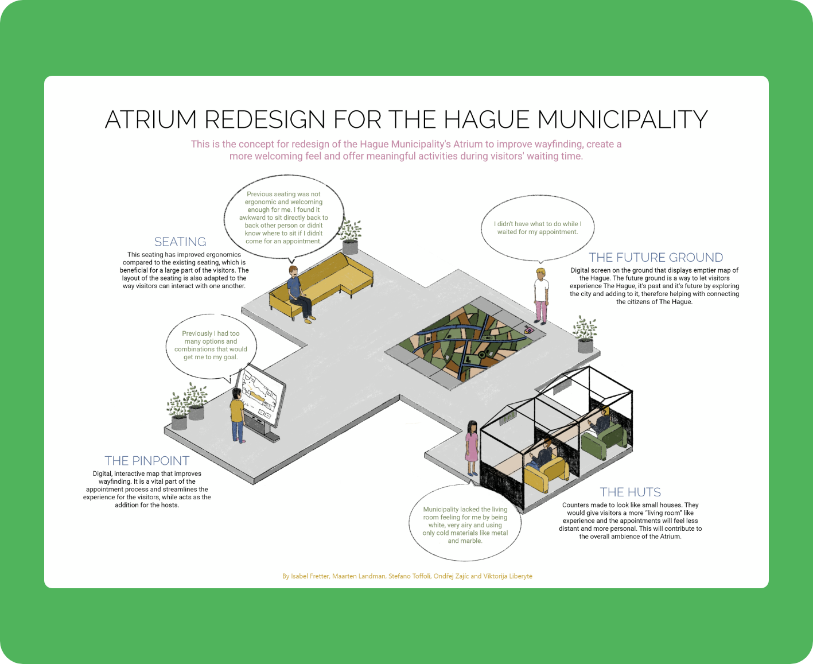

The Hague Municipality Service Design
15-weeks-long university project, performed in a team of 5 UX students. Each member of the team contributed equally to the work throughout the research and design phases.

15-weeks-long university project, performed in a team of 5 UX students. Each member of the team contributed equally to the work throughout the research and design phases.
Our research started with exploratory desk research made of materials provided by the municipality such as an architectural layout of the available space, ratings of their services (booths, website, and call center service), analytical stats of the website and an overview of all the services available. Then, a competitive analysis of other similar buildings has been performed: Barcelona's... Police Office, Alkmaar's City Office, and Het Kielzog Cultural and Municipal Complex. Finally, a Stakeholders' map has been created. As of observation, a general observation of activities within the municipality has been done (Fly on the Wall method), together with a behavioural map recording a timelapse video from above. Additionally, Contextual Inquiry, Artifact Analysis, and Graffiti Walls methods have been used. Finally, Interviews were divided in ethnographic interviews, semi-structured ones, and to conclude, users were asked to fill in a Reaction Card sheet.

The target audience for the municipality is very broad, since there are visitors from different
age groups, genders and nationalities. There are also both visitors who come there for provided
services and visitors who come there just to see the building and its beauty.
Results of our research
can be summed up with the following user insights:
Our ideation started with a brainstorming session where each member presented 2 concept each that prepared before the meeting. Once gathered together, we started merging the best ideas or single features together building on each other's ideas. At the end of this session, we picked 9 ideas totally, 3 for each design direction we had (wayfinding, waiting time, living room).
After feedback from the client we started prototyping our 4 core concepts and had 3 different types of prototype, each of them tested and refined:

After each test, these were the following insights: